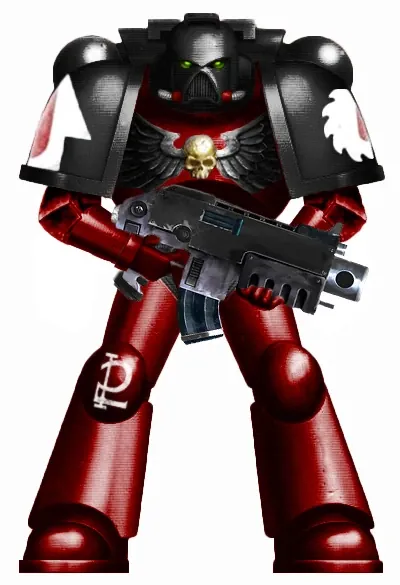
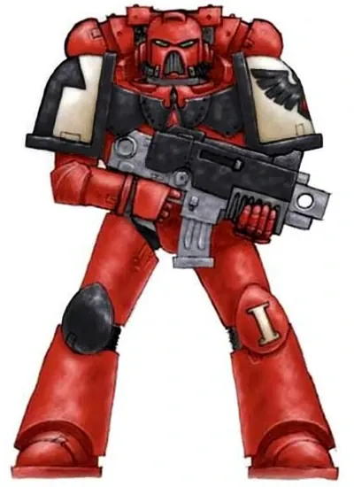
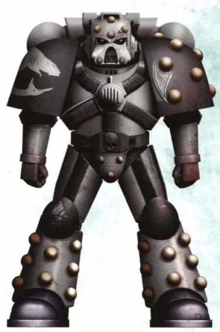
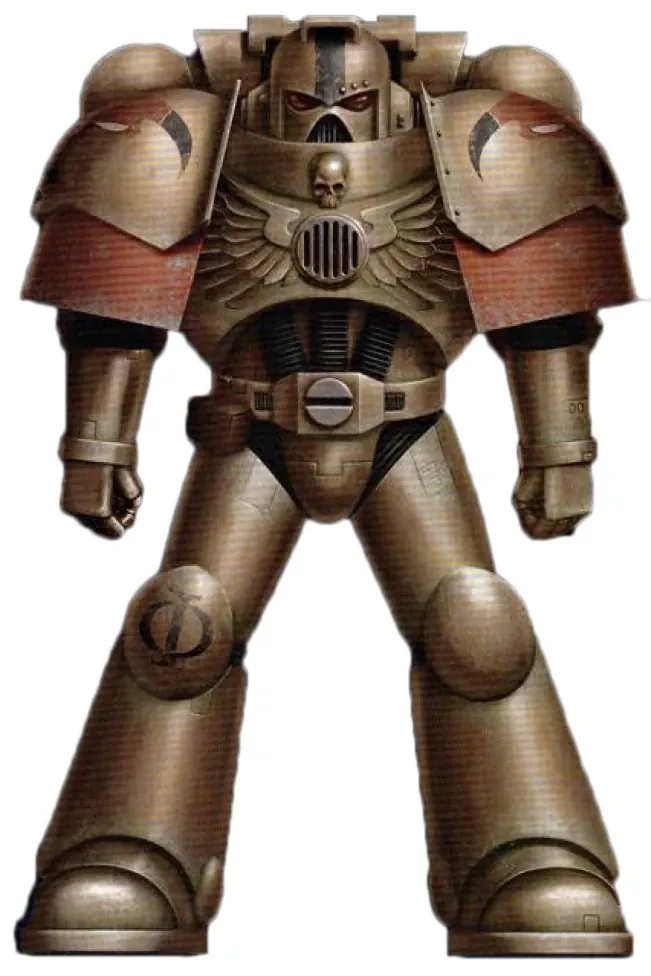
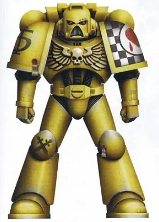
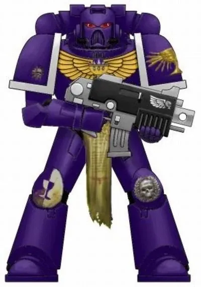
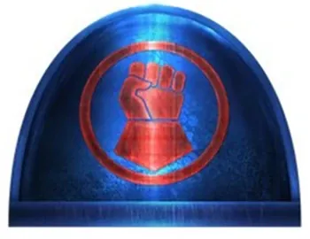

01ภาพรวม
Chapter นับพันที่สืบพันธุกรรมจาก Legion ดั้งเดิม — บางกลุ่มโด่งดังจากเกม นิยาย และโศกนาฏกรรมของตัวเอง
02ต้นกำเนิด
เมื่อ Codex Astartes แบ่ง Legion เป็น Chapter (Second Founding) และมี Founding ใหม่อีกหลายสิบครั้งตลอดหมื่นปี Chapter เหล่านี้สืบพันธุกรรมจาก Primarch ดั้งเดิม แต่มีชื่อ ตรา และวัฒนธรรมของตัวเอง (ดูหน้า Codex Astartes ข้อ 1–2)
03เนื้อเรื่องเจาะลึก
Blood Ravens — นักสะสมความรู้
Chapter จากเกม Dawn of War ไม่มีใครรู้ว่าสืบพันธุกรรมจาก Primarch คนใด หมกมุ่นกับการเก็บความรู้และโบราณวัตถุ มี Librarian มากผิดปกติ แฟน ๆ ตั้งทฤษฎีว่าอาจเกี่ยวข้องกับ Thousand Sons แต่ไม่มีคำยืนยัน
Crimson Fists — ผู้รอดจากหายนะ
Successor ของ Imperial Fists ที่ป้อมปราการบน Rynn's World ระเบิดเพราะขีปนาวุธของตัวเองทำงานผิดพลาดระหว่างการบุกของ Ork Chapter Master Pedro Kantor นำผู้รอดชีวิตไม่กี่คนรบกองโจรจนยึดดาวคืน
Flesh Tearers — คำสาปที่แรงที่สุด
Successor ของ Blood Angels ที่ Red Thirst และ Black Rage รุนแรงกว่าทุกกลุ่ม ขึ้นชื่อเรื่องความโหดร้ายจนถูกสอบสวนหลายครั้ง ผู้นำคือ Gabriel Seth
Carcharodons — ฉลามแห่งห้วงมืด
Chapter ลึกลับที่อาศัยใน "Outer Dark" นอกเขตจักรวรรดิ เงียบ โหด และจับคนไปเป็นทาส-ทหารใหม่ เชื่อกันว่าสืบจาก Raven Guard ผู้นำคือ Tyberos the Red Wake
Minotaurs — กำปั้นของ High Lords
เกราะสีบรอนซ์ รับคำสั่งตรงจาก High Lords of Terra มักถูกส่งไปลงโทษ Chapter อื่น เช่นในสงคราม Badab
Lamenters — Chapter ที่โชคร้ายที่สุด
Successor ของ Blood Angels จาก Cursed Founding เข้าข้างฝ่ายกบฏในสงคราม Badab ถูกลงโทษให้ทำครูเสดไถ่บาป 100 ปี แล้วเกือบถูก Hive Fleet Kraken ทำลายหมด
Soul Drinkers — ผู้ถูกประกาศเป็นกบฏ
Chapter จากนิยายชุด Soul Drinkers ที่ขัดแย้งกับ Adeptus Mechanicus จนถูกประกาศเป็นกบฏ แม้ยังเชื่อว่าตนรับใช้จักรพรรดิ
04นิสัยและวัฒนธรรม
- แต่ละ Chapter มีธรรมเนียม สีเกราะ และดาวบ้านเกิดของตัวเอง
- ยังเคารพ Primarch ต้นสายพันธุกรรม
- บางกลุ่มยึด Codex บางกลุ่มแหกกฎ
05จุดที่น่าสนใจ
- Blood Ravens คือตัวเอกของเกม Dawn of War
- Crimson Fists ปรากฏในกล่องเกม Space Marine ยุคแรก
- Carcharodons มีนิยายชุดของตัวเอง
06ความสามารถพิเศษ
สิ่งที่ทำให้ Successor Chapters แตกต่างจากทัพอื่น — ทั้งพลังที่ติดตัวมาทั้งเผ่า/ทัพ และความสามารถของบุคคลสำคัญ
ของทั้งเผ่า/ทัพ

พันธุกรรมจาก Primarch
Successor ได้ทั้งจุดแข็งและข้อบกพร่องของสายพันธุกรรม เช่น Flesh Tearers ได้ Red Thirst จาก Sanguinius
ของบุคคลสำคัญ

Pedro Kantor
Crimson FistsChapter Master ผู้กอบกู้ Chapter จากหายนะบน Rynn's World

Gabriel Seth
Flesh TearersChapter Master ที่พยายามรักษา Chapter ไว้ท่ามกลางคำสาป

Gabriel Angelos
Blood Ravensตัวเอกของเกม Dawn of War ผู้กลายเป็น Chapter Master
07วีรกรรมและเหตุการณ์สำคัญ
Second Founding
Successor รุ่นแรกเกิดขึ้น
Cursed Founding
Lamenters และอีกหลาย Chapter ถูกสร้างด้วยพันธุกรรมที่ผิดพลาด
Rynn's World
Crimson Fists เกือบสูญพันธุ์
Ultima Founding
Chapter ใหม่ของ Primaris เกิดขึ้นอีกมาก
08ยุค 40K — สหัสวรรษที่ 41
ยุค 40K Successor Chapter คือกำลังส่วนใหญ่ของ Space Marine — Chapter ต้นแบบมีเพียงไม่กี่ Chapter
09เนื้อเรื่องล่าสุด (Era Indomitus / M42)
หลายกลุ่มได้รับ Primaris เสริมกำลัง และมี Chapter ใหม่เกิดขึ้นจาก Ultima Founding
10แกลเลอรี





